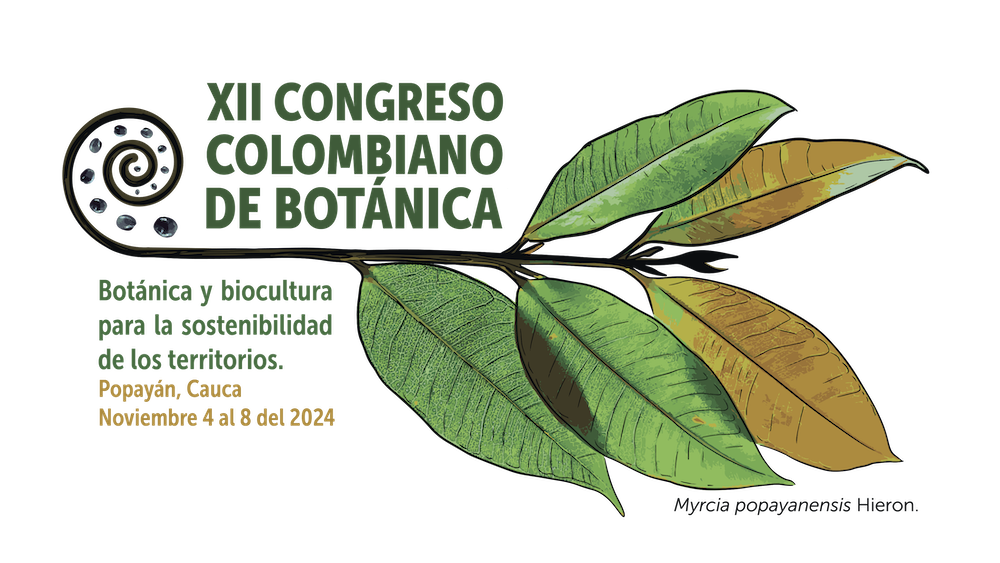

Análisis y técnicas en etnobotánica cuantitativa
2024-10-11

Del 4 al 8 de noviembre de 2024, se llevará a cabo el XII Congreso Colombiano de Botánica en Popayán, Colombia. Estaremos presentes con una variedad de actividades programadas.
Conoce todos los detallas haciendo clic en el nombre o en la imagen del curso.